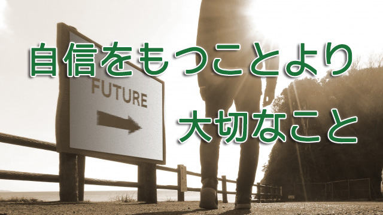

「ウチの子自信なさそうで困ってます。何とかもっと自信持てるようになって欲しいのですが…。」
もっと自信をもって事に望めばうまくいくのに。
そう考えて我が子に自信を持たそうとか、仕事などでも部下に自信を持たせたいと願う人が多いのではないだろうか。
その気持ちは私にも分かる。何といっても「自信なげな人」は頼りない。
生徒でもスタッフでも自信ない人には安心して任せられない。
だが自信を持つことと物事の成否は本当に関係しているのだろうか。自信満々で何かをやることが実は必ずしも良い結果につながるとは限らないと最近私は思うようになったからだ。
むしろ自信ありげに安請け合いする人ほど結果は心もとなかったりする。むしろ「私にできるだろうか」と不安を抱えながらそれでも「やれるだけやってみよう」とする人のほうが結果的に信頼できることが多い。
人は皆何かを成そうとするとき自信より不安を感じるものだ。受験生もそうだし、「プロジェクトを任せられる会社員も「万一失敗したらどうしよう」という不安や恐怖に駆られる。
そうして結局のところ「やるっきゃない！」と追い詰められあるいは開き直って事に臨む。
こうして追い詰められ、開き直って無我夢中にやっていたら意外とうまく行ったということも多い。何かに熱中すると「失敗したらどうしよう」と思う自分が消える。不安を抱えていたのも自分だから自分が失くなると不安も消えるからだ。
いわゆるフロー体験とか「ゾーンに入る」という独特の心理状態だが、東洋思想的に表現するなら無我の境地だ。
ここにヒントがある。何かを成す際には自信の有る無いではなく、たとえ追い詰められた末の成り行きだったとしても（不安を抱えていても）まずは真正面からその行為に身を投じることで、退路を断ち集中することが大切となる。そこには「失敗したら笑われる」とか「うまく行けば評価が上がる」とかウルさく騒ぐエゴが介在する余地はない。行為と一体化することで自我（心配する自己）が消えるからだ。
勉強する受験生なら勉強と一体化する。新たな企画を推進するプロジェクトリーダーならプロジェクトそのものになる。そこには自分と行為との距離はない。
この行為そのものと一体化する（没頭する）とき私たちは最大のパフォーマンスを発揮する。「自信を持とう、自信を持たねば」という思いはかえって不安と焦りを強め一体化から遠ざかる。すなわち良い結果につながらない。
つまり自信とは予め用意するものではない。自信とはむしろ後からついてくるものだということになる。
無我の境地とは楽しむこと
一体化とか無我の境地とかが分かりにくいと感じる人もいるかも知れないので具体例をあげる。
たとえば受験生が急激に伸びるとき、何が起こっているのだろう。受験生といっても始めは「なかなか成績が伸びない」「模試の偏差値が上がってこない」「落ちたらどうしよう」という不安や焦りが心を占めてなかなか集中できないのが普通だ。ところが本番が近づくにつれ「もう向き合うしかない」と腹をくくると次第に集中力が研ぎ澄まされてくる。それまでただ覚えるだけで断片的に詰め込んだ知識が「意味あるもの」として急に体系化される瞬間がある。
要するにイヤイヤ勉強しているときは、無意味に思えた味気ない知識の一つひとつが実は大きな全体の欠かせない一部であったという気づきだ。
「あ～そうだったのか！」という、バラバラの断片がつながって全体が分かったという喜びの感覚。これはまさにいま勉強している対象（教科）と自分が一体化している状態といえる。それまで頭の中をモヤモヤとおおっていた霧が晴れてサーっと視界が広がった感じとでも言えようか。
この喜びの体験は決してハイテンションなものではないが独特の至福感に包まれている。そして気がつけばすでに何時間も経過しているのだ。それほど没頭していたわけだ。まさに我を忘れている状態。
私は受験を終えたばかりの教え子からよくこんな報告を受けた。「先生、国語の問題文を読んでいたら内容に引き込まれ感動してしまいました！」
こんなとき普通は感動したかどうかよりちゃんと正解を書けたかどうかのほうが気になるところだが、経験上こういう子は受かると確信しているので私は「偉い。集中していたのだな。」と褒めることにしていた。（私が覚えている限り『問題に感動した』子の合格率は百パーセントだ）
受験期に急激に学力が伸びる子も、このように本番中に感動する子も共通するのは、行為と一体化していること。そこには至福だけがあり結果（点数が上がるとか合格するとか）を思い煩う心がない。どちらかというと楽しんでいる。それが無我の境地。
同じようなことは仕事でもよく経験する。何かを企画し皆で目標を達成しようとするとき誰でもが「うまく行くかどうか」心配する。いくらトップが達成したらこんないいことがあると旗を振ったところで、皆が皆やる気と希望に燃えて走り出すことはない。
それよりも「結果」に拘らずいま目の前にあるやるべき課題そのものに全力投球するよう導いたほうが良い。自信があろうとなかろうと目標を達成しようがしまいが、そういうことに頓着するのではなくいかに自分の能力の上限を引き上げるか。そこに賭けてみる気がないかと誘ってみる。そうして各々がやるべき仕事（対象）と一体化するほどその熱気は全体に波及する。
ここでもやはり一体化による無我の境地（ゾーンに入る）が見られる。対象と一体化し深く掘り下げることで新たなアイディア、気づきインスピレーションがやって来るがそのときはすでに「結果を気にする自我＝エゴ」は消えている。むしろ仕事を楽しんでいる、そんな自分が居ることに気がつく。
スタッフの多くがこのような状況にあると、様々な困難があっても奇跡的に物事がうまく回りいつの間にか目標が達成されているということがよくある。
だから「無我」といっても難しい話ではない。物事に熱中し、我を忘れ楽しむことが良い結果を生むということに過ぎない。「成果を上げよう」とか「他人にどう評価されているか」「失敗したらどうするのだ」という煩いは余計な自我主義であり、それが物事の達成を邪魔しているのだと気づくべきと言いたいのだ。
なので何かを成そうとするときは、自信が有るかどうかより飛び込む勇気のほうが大事だということ。勇気と言っても蛮勇ではなく「やるしかないのならきちんと向き合おう」という誠意であり、自分を試す機会と捉える前向きな姿勢である。
子どもの「存在」を丸ごと受け入れる
こうして見てくると親が子どもに自信を持ってもらいたいと願うのは、成績なら成績を上げるためには予め自信がなくてはならぬという一般常識に染められた考えであり決して真実ではないことがわかる。
そこには成績（成果）を挙げるという計算が先にあり、その手段として「自信を持つ」のが有効という一種の成果主義の発想がある。成果主義が破たんするのは一般企業の失敗例を見ても明らかだ。
先の受験生や仕事の成功例でも分かる通り、本当に物事がうまくいくときそのようなエゴイスティックな自我主義が消えている。行為そのものと一体化し「成功しよう」という自我が失せている状態、いわば純粋体験に在ることこそが逆説的に達成に至る近道なのだ。
従って子どもや部下に「自信を持て」「やればできる」などと言うのは励みになるどころか、できなかったらどうしようという不安や恐れを強めることになりかねない。
そもそも「自信を持て」と言うのは「お前は自信がないからダメなのだ」と同義であり相手の存在に対する否定的言明である。これでは前に進もうとする勇気は沸いて来ず、行動するエネルギーも満ちて来ない。
だから、もしあなたが子をもつ親なら子どもに自信を持たせようとするより大切なことがあるのではないかと考えを巡らせて欲しい。それは何だろうか。
自信を持たせるより大切なこと。それはまず子どもの存在を丸ごと肯定すること。ありのままの子どもの姿を全面的に受容することだ。それは無条件の愛を意味する。
自信を持たなきゃダメ。成果を出さなければダメというのは条件つきの愛であって、いくら子どものためだと言ったところで子どもからすれば自分が否定された思いしかない。
子どもの存在を完全に認め受け入れるとは、この世に生を受けこの世に現れてきたことを祝福する気持ちであり、自分の子として生まれてくれたことに対する感謝の思いである。
これによって子どもはいつも「自分は大丈夫なのだ」という自己信頼感を持つことができる。たとえ失敗したって自分は大丈夫なのだという自己を信頼する気持ちであれば、物事に正面から向き合う勇気を持てる。
子どもの「ありのまま」を認め、子どもの特性を自由に解放させることが子どもの将来を決定づける大切な要因なのだ。
その上で未知なことにチャレンジする精神を養うこと。
「やれるかどうか分からない。でもやってみよう」という姿勢を常に持つように心がけることだ。
親は「結果」ばかりを求めるのではなく、どのような姿勢で物事と取り組むのかに重きを置いて長い目で子どもを見て欲しい。行為と一体となってその行為自体を純粋に楽しむこと。そこに解放があり喜びがある。結果は自ずとついて来る。
そういう信念で子どもを見守って欲しい。
本物の自信はこのようなプロセスの果てに生まれるのだから。
次回のブログは10月10日掲載予定です。